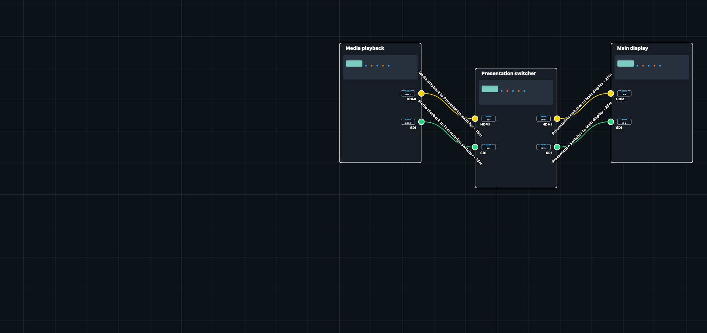
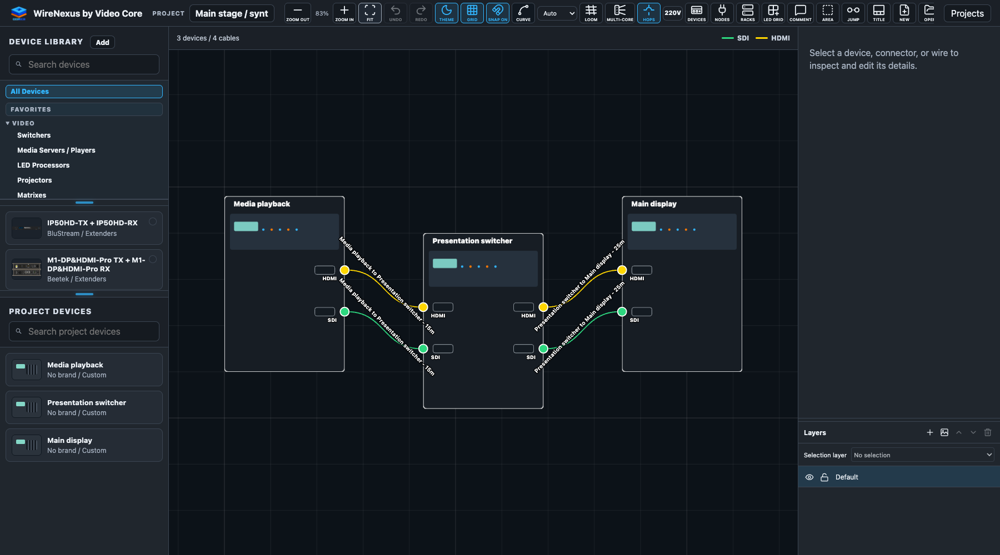

Build the signal path.
Place devices, route cables and inspect connections on the canvas. Jump Nodes keep distant connections readable; Cable Looms organize shared runs.

Design the system. Follow the signal. Deliver the details. One connected workspace for your AV wiring and documentation.
Existing accounts can sign in. Public registration is not open.
Keep equipment, ports and cable connections together, from the first design pass to technical handover.

Place devices, route cables and inspect connections on the canvas. Jump Nodes keep distant connections readable; Cable Looms organize shared runs.
Use the factory catalogue or author device definitions with artwork, connectors, shared buses and modular cards. Personal and project definitions keep custom equipment close.
Build a schedule from project connections, with cable identifiers, endpoints and lengths. Keep the practical information tied to the drawing.
Export PDF drawings and HTML viewers for sharing a readable system. Local .avd files preserve the editable project for saving, reopening and exchange.
Open local files or use authorized cloud workspaces, saved versions and recovery. Cloud limits and publishing access depend on the workspace's assigned plan.
Enterprise collaboration supports presence and synchronized edits, with server-validated operations and conflict handling.
Live collaboration is undergoing controlled acceptance testing. General availability, service commitments and broader access have not been announced.
Sign in to the existing WireNexus application. Your projects, permissions and local-file workflow stay in the app.